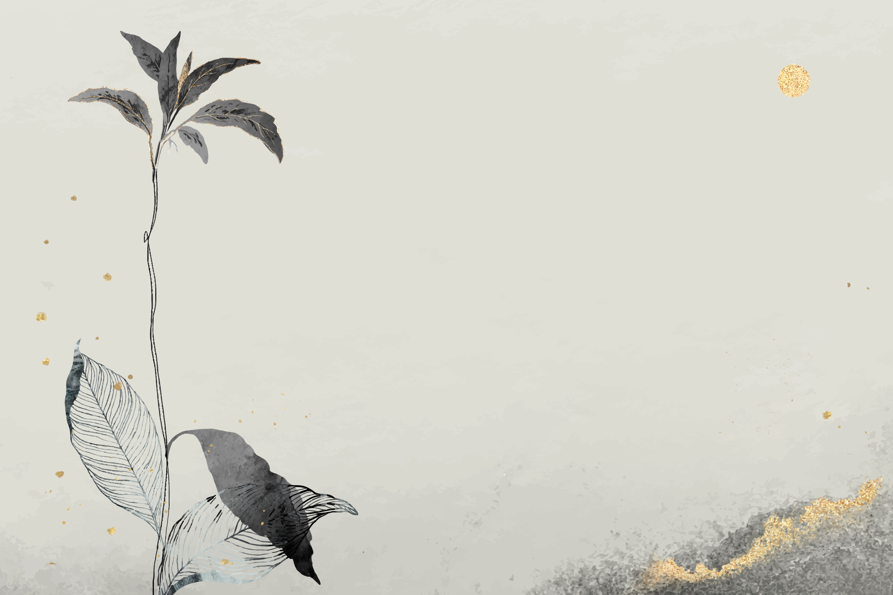
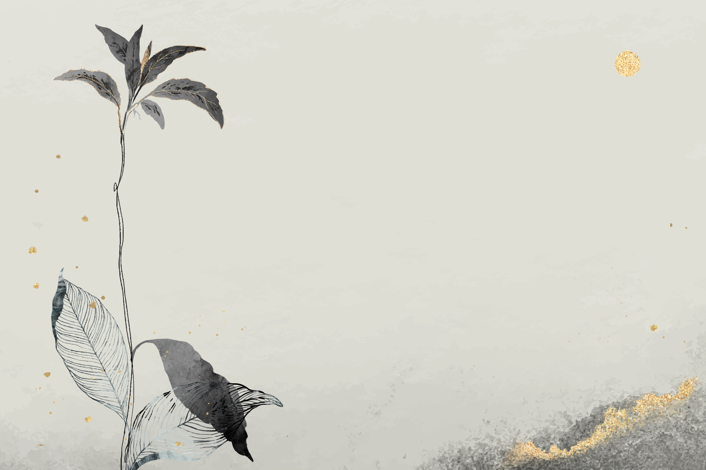

本页面已集成背景音乐功能，请查看右下角的音乐控制器。
功能包括：
提示：请将您的背景音乐文件放在 music/background-music.mp3 路径下。
music/background-music.mp3
CSS中的背景图片路径为: ../images/paper_texture.png 和 ../images/chinese_pattern.png
../images/paper_texture.png
../images/chinese_pattern.png
当前测试页面使用的路径为: images/paper_texture.png 和 images/chinese_pattern.png
images/paper_texture.png
images/chinese_pattern.png
 
